Introduction to Optimization
CO 250
Lecture 17
Lecture Outline
- Review of Farkas' Lemma
- Review of Normal Cones
- Minimum Cost Perfect Matchings
Review: Farkas' Lemma
Review: Farkas' Lemma
Farkas' Lemma
For $A \in \R^{m \times n}$ and $b \in \R^m$, exactly one of the following two things holds:
- There is some $x \in \R^n$ so that $Ax = b$ and $x \ge 0$.
- There is some $y \in \R^m$ so that $A^{\intercal}y \ge 0$ and $b^{\intercal}y < 0$.
Proof is by strong duality applied to the LPs
$\max \{\vec{0}^{\intercal}x : Ax = b, x\ge 0\}$
$\min \{b^{\intercal}y : A^{\intercal}y \ge c\}$
Review: Farkas' Lemma
Farkas' Lemma (Version II)
For $A \in \R^{m \times n}$ and $b \in \R^m$, exactly one of the following two things holds:
- There is some $x \in \R^n$ so that $Ax \le b$.
- There is some $y \in \R^m$ so that $y \ge 0$, $A^{\intercal}y = 0$ and $b^{\intercal}y < 0$.
Proven by strong duality applied to the LPs.
\[ \begin{aligned} \max\quad & \vec{0}^{\intercal}x \\ \text{s.t.}\quad & Ax \le b \end{aligned} \]
\[ \begin{aligned} \min\quad & b^{\intercal}y \\ \text{s.t.}\quad & A^{\intercal}y = 0 \\ & y \ge 0 \end{aligned} \]
Review: Normal Cones
Review: Normal Cones
For a vertex $v$ of a polytope $P$, the normal cone $N_v$ is the set of objective vectors $c$ for which $v$ is a maximizer of $c^{\intercal}x$ over $P$:

\[ N_v = \{c \in \R^n : c^{\intercal}v \ge c^{\intercal}x \text{ for all } x \in P \}. \]
Review: Normal Cones
Normal Cone Characterization (SEF Polytopes)
Let $P = \{x \in \R^n : Ax = b,\ x \ge 0\}$ and let $v \in P$ be a vertex. Then $c \in N_v$ if and only if there exists $y \in \R^m$ with
\[ c \le A^{\intercal}y, \]
and $c_i = (A^{\intercal}y)_i$ whenever $v_i > 0$.
This is a rephrasing of complementary slackness.
Review: Normal Cones
Normal Cone Characterization (Nondegenerate Vertices)
Let $v$ be a nondegenerate vertex of $P = \{x : Ax = b,\ x \ge 0\}$ with basis $B$, and write $c = \begin{pmatrix} c_B & c_N \end{pmatrix}$. Then
\[ N_v = \{c \in \R^n : c - A^{\intercal}A_B^{-\intercal}c_B \le 0\}. \]
Review: Normal Cones
Normal Cone Characterization (Polytopes $Ax \le b$)
Let $P = \{x \in \R^n : Ax \le b\}$ and let $v \in P$ be a vertex. Then $c \in N_v$ if and only if there exists $y \in \R^m$ with
\[ c = A^{\intercal}y, \qquad y \ge 0, \]
and $y_i = 0$ whenever $(Av)_i < b_i$.
If $a_1^{\intercal}x \le b_1, \dots, a_k^{\intercal}x \le b_k$ are the constraints tight at $v$, then
\[ N_v = \Big\{\sum_{i=1}^k y_i a_i : y \ge 0\Big\}. \]
Review: Normal Cones
For the hypercube $P = \{x \in \R^n : 0 \le x_i \le 1\}$ and a vertex $v \in \{0,1\}^n$:
\[ N_v=\{c\in\R^n : c_i\ge0 \text{ if } v_i=1,\ c_i\le0 \text{ if } v_i=0\}. \]

Minimum Cost Perfect Matching
Minimum Cost Perfect Matching
Recall a graph $G = (V, E)$ consists of a finite set $V$ of vertices and a set $E$ of edges, where each edge is a set $\{u, v\}$ of two distinct vertices, written $uv$.
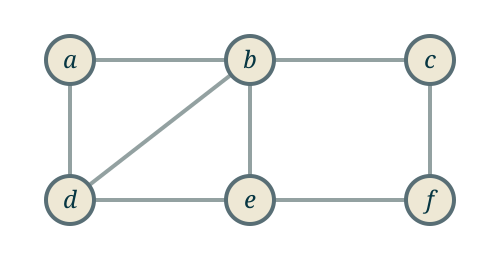
\[V = \{a, b, c, d, e, f\}\]
\[E = \{ab, bc, ad, bd, be, cf, de, ef\}\]
Minimum Cost Perfect Matching
A matching in $G$ is a set $M \subseteq E$ of edges, so that every vertex is contained in at most one edge.

A matching: $\{ad, be, cf\}$
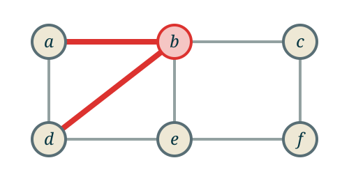
Not a matching: $\{ab, bd\}$
Minimum Cost Perfect Matching
A matching $M$ is perfect if every vertex is contained in exactly one edge.
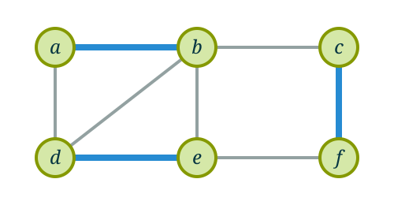
Perfect: $\{ab, de, cf\}$
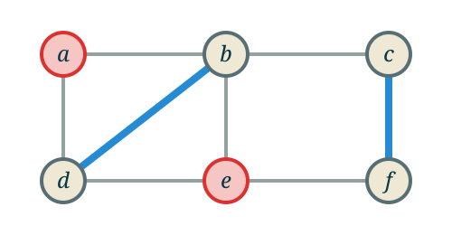
Not perfect: $\{bd, cf\}$
Minimum Cost Perfect Matching
This graph has exactly three perfect matchings.
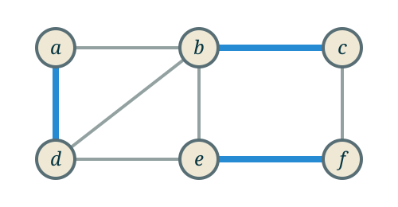
$\{bc, ad, ef\}$
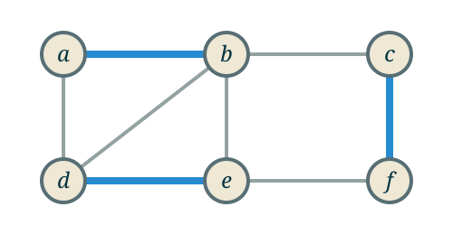
$\{cf, ab, de\}$
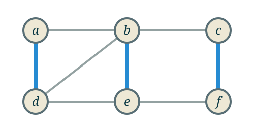
$\{cf, ad, be\}$
Minimum Cost Perfect Matching
Not every graph has a perfect matching.
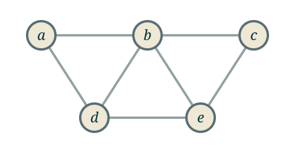
$|V| = 5$
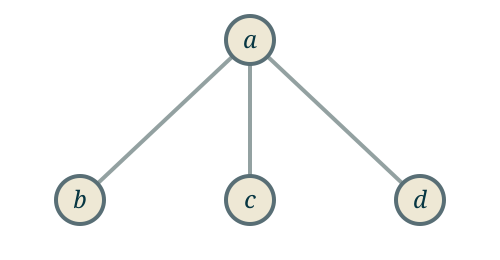
A star with three leaves
Minimum Cost Perfect Matching
For this class, we will consider a graph where each edge has a cost.
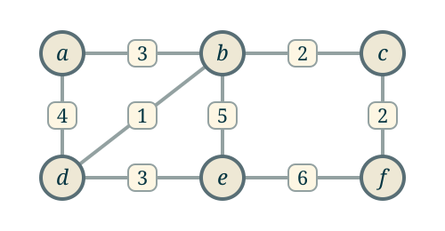
We imagine that we need to buy each edge to use it. The cost of a matching is the sum of the costs of the edges in the matching.
Minimum Cost Perfect Matching
The cost of a matching $M$ is
\[c(M) = \sum_{e \in M} c_e.\]
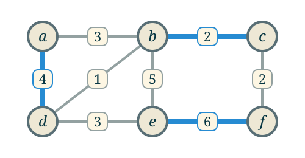
$c(M) = 2 + 4 + 6 = 12$
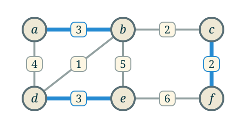
$c(M) = 2 + 3 + 3 = 8$
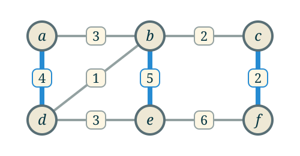
$c(M) = 2 + 4 + 5 = 11$
Minimum Cost Perfect Matching
Minimum Cost Perfect Matching Problem
Input: a graph $G = (V, E)$ and costs $c_e \in \R$ for each $e \in E$.
Output: a perfect matching $M$ of $G$ with $c(M)$ as small as possible (if the graph has a perfect matching).
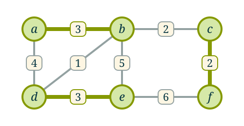
\[M^* = \{ab, de, cf\}\]
\[c(M^*) = 8\]
Minimum Cost Perfect Matching
From earlier in the course, we saw ways of modelling matchings using an integer program.
We have variables $x_e$ for edge $e$. We want $x_e$ to be 1 if $e$ is included in the matching we are looking for and 0 ottherwise.
We also have constraints for each vertex: the total number of edges that are incident to that vertex should be exactly 1.
Minimum Cost Perfect Matching
The minimum cost perfect matching integer program is: \[ \begin{aligned} \min\qquad &\sum_{e \in E} c_e x_e \\ \text{s.t. }\qquad &\text{For each vertex }v \in V,\;\sum_{e \in E : v \in e} x_e = 1 \\ & 0 \le x_e\\ & x_e \in \mathbb{Z}. \end{aligned} \]
Note that we don't need to have the constraint that $x_e \le 1$, since that is implied by the equality constraints.
Minimum Cost Perfect Matching
Integer programs are generally much harder to solve than linear programs, so we can ask what happens when we drop the integrality constraint.
This is the linear programming relaxation of the minimum cost perfect matching problem. \[ \begin{aligned} \min\qquad &\sum_{e \in E} c_e x_e \\ \text{s.t. }\qquad &\text{For each vertex }v \in V,\;\sum_{e \in E : v \in e} x_e = 1 \\ & 0 \le x_e. \end{aligned} \]
Is this a reasonable way to approach this problem?
Minimum Cost Perfect Matching
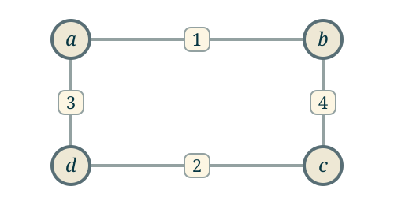
\[ \begin{aligned} \min\quad & x_{ab} + 4x_{bc} + 2x_{cd} + 3x_{da} \\ \text{s.t.}\quad & x_{ab} + x_{da} = 1 \\ & x_{ab} + x_{bc} = 1 \\ & x_{bc} + x_{cd} = 1 \\ & x_{cd} + x_{da} = 1 \\ & x \ge 0. \end{aligned} \]
The optimal solution to this LP is the integral point \[x^* = (1, 0, 1, 0)!\]
We can check that this is optimal using the dual solution \[y^* = (0, 1, 1, 1).\]
Minimum Cost Perfect Matching
Example: a triangle.
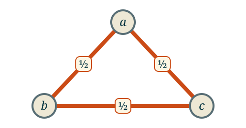
\[ \begin{aligned} \min\quad & x_{ab} + x_{bc} + x_{ca} \\ \text{s.t.}\quad & x_{ab} + x_{ca} = 1 \\ & x_{ab} + x_{bc} = 1 \\ & x_{bc} + x_{ca} = 1 \\ & x \ge 0. \end{aligned} \]
The only feasible solution to this LP is \[x^* = \left(\tfrac{1}{2}, \tfrac{1}{2}, \tfrac{1}{2}\right),\] which is not integral.
This triangle has no perfect matching, but the LP relaxation is still feasible.
Minimum Cost Perfect Matching
Example: two triangles joined by an edge.
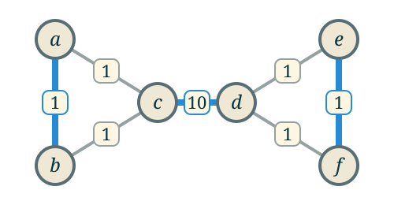
The only perfect matching:
\[M = \{ab, cd, ef\}\]
\[c(M) = 1 + 10 + 1 = 12\]
Minimum Cost Perfect Matching
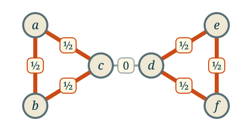
\[x^*_{ab} = x^*_{bc} = x^*_{ca} = x^*_{de} = x^*_{ef} = x^*_{fd} = \tfrac{1}{2}, \quad x^*_{cd} = 0\]
\[\sum_{e \in E} c_e x^*_e = 6 \cdot \tfrac{1}{2} = 3\]
Minimum Cost Perfect Matching
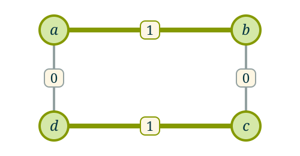
Cycle on 4 vertices
$x^* = (1, 0, 1, 0)$
Triangle
$x^* = (\tfrac{1}{2}, \tfrac{1}{2}, \tfrac{1}{2})$
Two triangles joined by an edge
$x^*_e = \tfrac{1}{2}$ on the triangle edges
Why does the LP sometimes work and sometimes not?
Minimum Cost Perfect Matching
Remember that a graph is bipartite if its vertices can be partitioned into two parts, so that edges only join vertices in different parts.
Equivalently, the vertices of the graph can be colored either black or white so that every edge has one black vertex and one white vertex.
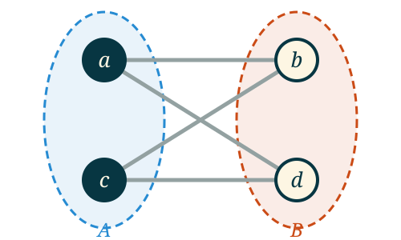
Minimum Cost Perfect Matching
Integrality of Bipartite Perfect Matching Polytope
For any bipartite graph with $n$ vertices and $m$ edges, let $P = \{x \in \R^m : \forall v \in V,\;\sum_{e \in E : v \in e} x_e = 1, x \ge 0\}$.
Every vertex of $P$ has entries which are all either 0 or 1.
In particular, the linear programming relaxation of the bipartite matching problem always has the same optimal value as the minimum cost perfect matching.
Proof of Integrality Theorem
We will use the extreme point characterization of the vertices of a polytope: we will show that if $x \in P$ is not integral, then there exist $y$ and $z$ so that $y, z \neq x$, and there is some $t$ so that $0 \le t \le 1$ so that $x = ty + (1-t)z$.
Equivalently, we will find some $v \neq 0$ and $\epsilon > 0$ so that $x - \epsilon v$ and $x + \epsilon v$ are both in $P$. This implies that $x$ is not an extreme point by taking $y = x-\epsilon v$, $z = x+\epsilon v$ and $x = \frac{1}{2}y + \frac{1}{2}z$.
Framed slightly differently, if $x \in P$ has an entry which is not either 0 or 1, we want to find a way to perturb $x$ a little while leaving it in the polytope.
Proof of Integrality Theorem
Fix $x$, and note that $x$ assigns a number to each edge. We say that $e \in E$ is a fractional edge if the weight $x_e$ is not an integer.
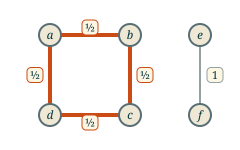
Proof of Integrality Theorem
Claim 1 Every vertex that is incident to a fractional edge is incident to at least 2 fractional edges.
Proof Let $u$ be a vertex and let $e = \{u,v\}$ be a fractional edge containing $u$. The constraints include that $\sum_{e' \in E : u \in e'} x_{e'} = 1$, so \[x_e = 1 - \sum_{e' \in E : u \in e'\\ e' \neq e} x_{e'},\] and since the left side is fractional, at least one of the other terms in the sum must also be fractional.
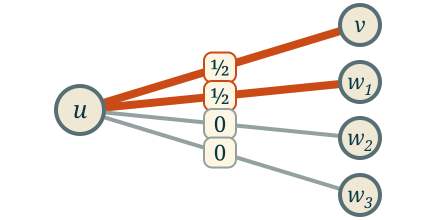
Proof of Integrality Theorem
Claim 2 There is a cycle in $G$ consisting of only fractional edges.
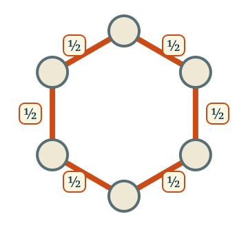
Imagine starting at one of the vertices with a fractional edge and walking through the graph, at each step moving along an edge that is different from the previous edge. (Possible by Claim 1)
At some point this walk must return to a vertex that it already visited. Why? There are only finitely many vertices, so at some point, we will reach a vertex all of whose neighbours along fractional edges have already been visited.
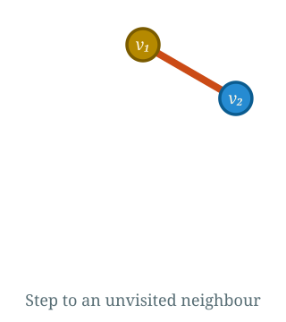
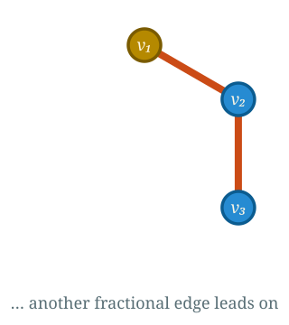
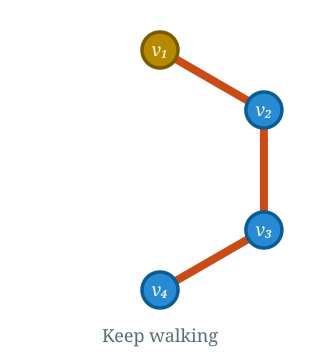
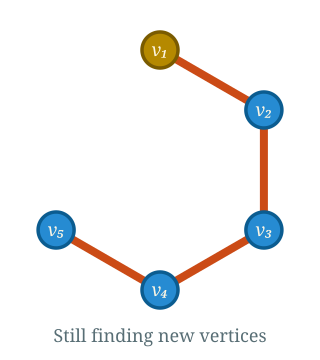
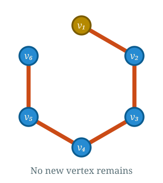
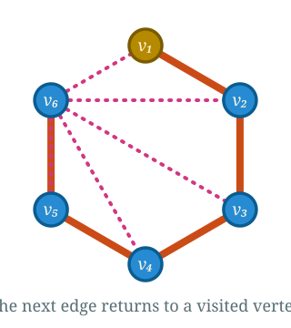
Proof of Integrality Theorem
Claim 3 Every cycle in a bipartite graph has an even number of edges.
We will use the bipartiteness property of the graph: each time we cross an edge of the graph, we move from one side of the graph to the other, so to return to the same side, we need to make an even number of crossings.
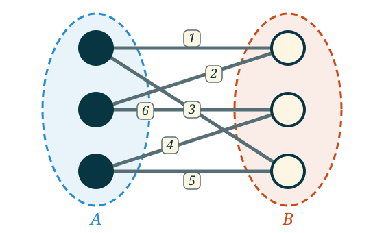
Proof of Integrality Theorem
We are now almost done. Let the edges in the cycle be $e_1, \dots, e_k$, where $k$ is even. We then let $v$ be a vector where $v_{e_i} = 1$ if $i$ is even and $v_{e_i} = -1$ if $i$ is odd, and $v_e = 0$ if $e$ is not in the cycle.
Note that for each vertex $v$, \[ \sum_{e \in E : v \in e} v_e = 0. \]
Therefore, $x + \epsilon v$ and $x - \epsilon v$ satisfy the constraints for all vertices for any $\epsilon$.
Finally, we note that $x_{e_i} > 0$ for each $i$, since all of the edges in the cycle were fractional (and in particular $x_{e_i} \neq 0$). Therefore, for $\epsilon$ small enough, $x - \epsilon v$ and $x + \epsilon v$ are still positive.
Minimum Cost Perfect Matching
Let's consider a simple problem with taxis: there are some number of taxis and an equal number of people in a city, and each person is hailing a taxi. How do we assign taxis to people to minimize the total amount of milage needed to get the taxis to a person.
The underlying bipartite graph is the complete bipartite graph on $3$ vertices.
Minimum Cost Perfect Matching
With a variable $x_{ij}$ for assigning person $i$ to taxi $j$, the LP relaxation is:
Minimum Cost Perfect Matching
We can directly apply the simplex method to solve this question.
The optimal solution assigns person $i$ to taxi $i$:
Minimum Cost Perfect Matching
Remark on Nonuniqueness If there are multiple optimal matchings then there will also be fractional optimal solutions to the LP.
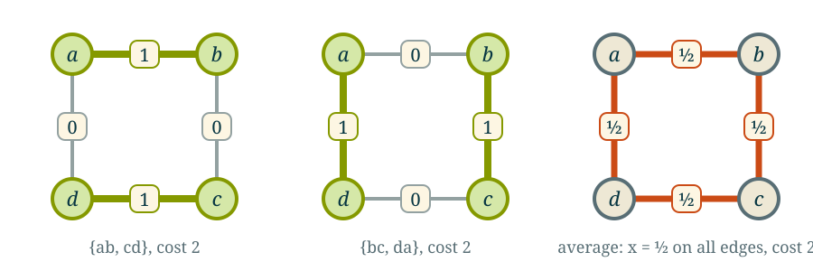
Here both matchings cost $2$, so their average $x = \tfrac12$ on every edge is also an optimal LP solution.
The theorem guarantees that some optimal solution will be integral, not that all of them will be. The optimal value will always be correct.
Minimum Cost Perfect Matching
Next week, we will discuss an algorithm for minimum cost perfect matching that uses strong duality.